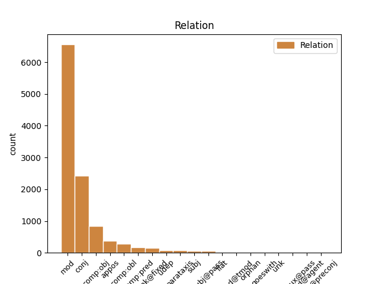
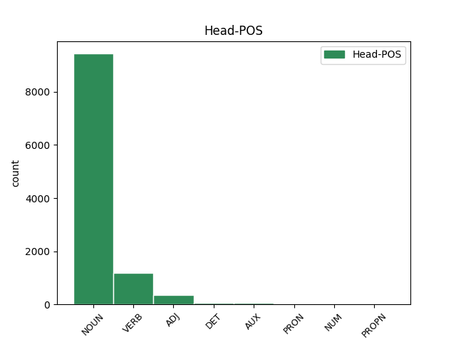
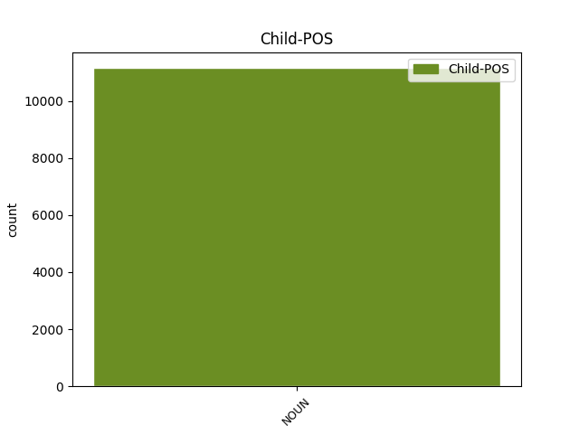

Distribution of features within this leaf



Agreement Rules sorted by frequency.
- When the dependent token is the modifer(mod) of the head token, and the dependent token is NOUN.
1 Mediana _ _ _ _ 0 _ _ _
2 me _ _ _ _ 0 _ _ _
3 a _ _ _ _ 0 _ _ _
4 unui _ _ _ _ 0 _ _ _
5 set set NOUN Ncms-n Definite=Ind|Gender=Masc|Number=Sing 0 _ _ _
6 de _ _ _ _ 0 _ _ _
7 date _ _ _ _ 0 _ _ _
8 statistice _ _ _ _ 0 _ _ _
9 distincte _ _ _ _ 0 _ _ _
10 ordonate _ _ _ _ 0 _ _ _
11 după _ _ _ _ 0 _ _ _
12 mărime _ _ _ _ 0 _ _ _
13 x1 x1 NOUN Ncm--n Definite=Ind|Gender=Masc 5 mod _ _
14 < _ _ _ _ 0 _ _ _
15 x2 _ _ _ _ 0 _ _ _
16 < _ _ _ _ 0 _ _ _
17 ... _ _ _ _ 0 _ _ _
18 < _ _ _ _ 0 _ _ _
19 xn _ _ _ _ 0 _ _ _
20 este _ _ _ _ 0 _ _ _
21 numărul _ _ _ _ 0 _ _ _
22 care _ _ _ _ 0 _ _ _
23 împarte _ _ _ _ 0 _ _ _
24 setul _ _ _ _ 0 _ _ _
25 de _ _ _ _ 0 _ _ _
26 date _ _ _ _ 0 _ _ _
27 în _ _ _ _ 0 _ _ _
28 două _ _ _ _ 0 _ _ _
29 grupe _ _ _ _ 0 _ _ _
30 egale _ _ _ _ 0 _ _ _
31 ca _ _ _ _ 0 _ _ _
32 număr _ _ _ _ 0 _ _ _
33 . _ _ _ _ 0 _ _ _
1 Mediana _ _ _ _ 0 _ _ _
2 me _ _ _ _ 0 _ _ _
3 a _ _ _ _ 0 _ _ _
4 unui _ _ _ _ 0 _ _ _
5 set _ _ _ _ 0 _ _ _
6 de _ _ _ _ 0 _ _ _
7 date _ _ _ _ 0 _ _ _
8 statistice _ _ _ _ 0 _ _ _
9 distincte _ _ _ _ 0 _ _ _
10 ordonate _ _ _ _ 0 _ _ _
11 după _ _ _ _ 0 _ _ _
12 mărime _ _ _ _ 0 _ _ _
13 x1 _ _ _ _ 0 _ _ _
14 < _ _ _ _ 0 _ _ _
15 x2 x2 NOUN Ncm--n Definite=Ind|Gender=Masc 0 _ _ _
16 < _ _ _ _ 0 _ _ _
17 ... _ _ _ _ 0 _ _ _
18 < _ _ _ _ 0 _ _ _
19 xn xn NOUN Ncm--n Definite=Ind|Gender=Masc 15 conj _ _
20 este _ _ _ _ 0 _ _ _
21 numărul _ _ _ _ 0 _ _ _
22 care _ _ _ _ 0 _ _ _
23 împarte _ _ _ _ 0 _ _ _
24 setul _ _ _ _ 0 _ _ _
25 de _ _ _ _ 0 _ _ _
26 date _ _ _ _ 0 _ _ _
27 în _ _ _ _ 0 _ _ _
28 două _ _ _ _ 0 _ _ _
29 grupe _ _ _ _ 0 _ _ _
30 egale _ _ _ _ 0 _ _ _
31 ca _ _ _ _ 0 _ _ _
32 număr _ _ _ _ 0 _ _ _
33 . _ _ _ _ 0 _ _ _
1 Conform _ _ _ _ 0 _ _ _
2 regulii _ _ _ _ 0 _ _ _
3 empirice _ _ _ _ 0 _ _ _
4 dacă _ _ _ _ 0 _ _ _
5 o _ _ _ _ 0 _ _ _
6 serie _ _ _ _ 0 _ _ _
7 de _ _ _ _ 0 _ _ _
8 repartiție _ _ _ _ 0 _ _ _
9 este _ _ _ _ 0 _ _ _
10 normală _ _ _ _ 0 _ _ _
11 atunci _ _ _ _ 0 _ _ _
12 fracțiunea _ _ _ _ 0 _ _ _
13 de _ _ _ _ 0 _ _ _
14 date _ _ _ _ 0 _ _ _
15 situate _ _ _ _ 0 _ _ _
16 la _ _ _ _ 0 _ _ _
17 cel _ _ _ _ 0 _ _ _
18 mult _ _ _ _ 0 _ _ _
19 o _ _ _ _ 0 _ _ _
20 unitate _ _ _ _ 0 _ _ _
21 de _ _ _ _ 0 _ _ _
22 deviație _ _ _ _ 0 _ _ _
23 standard _ _ _ _ 0 _ _ _
24 s _ _ _ _ 0 _ _ _
25 față _ _ _ _ 0 _ _ _
26 de _ _ _ _ 0 _ _ _
27 medie _ _ _ _ 0 _ _ _
28 este _ _ _ _ 0 _ _ _
29 aproximativ _ _ _ _ 0 _ _ _
30 68% _ _ _ _ 0 _ _ _
31 , _ _ _ _ 0 _ _ _
32 iar _ _ _ _ 0 _ _ _
33 fracțiunea _ _ _ _ 0 _ _ _
34 de _ _ _ _ 0 _ _ _
35 date _ _ _ _ 0 _ _ _
36 situate _ _ _ _ 0 _ _ _
37 la _ _ _ _ 0 _ _ _
38 cel _ _ _ _ 0 _ _ _
39 mult _ _ _ _ 0 _ _ _
40 două _ _ _ _ 0 _ _ _
41 unități _ _ _ _ 0 _ _ _
42 de _ _ _ _ 0 _ _ _
43 deviație _ _ _ _ 0 _ _ _
44 standard _ _ _ _ 0 _ _ _
45 s _ _ _ _ 0 _ _ _
46 față față NOUN Ncfsrn Case=Acc,Nom|Definite=Ind|Gender=Fem|Number=Sing 0 _ _ _
47 de _ _ _ _ 0 _ _ _
48 medie medie NOUN Ncfsrn Case=Acc,Nom|Definite=Ind|Gender=Fem|Number=Sing 46 comp:obj _ _
49 este _ _ _ _ 0 _ _ _
50 aproximativ _ _ _ _ 0 _ _ _
51 95% _ _ _ _ 0 _ _ _
52 . _ _ _ _ 0 _ _ _
1 Coeficientul _ _ _ _ 0 _ _ _
2 de _ _ _ _ 0 _ _ _
3 variație _ _ _ _ 0 _ _ _
4 este _ _ _ _ 0 _ _ _
5 o _ _ _ _ 0 _ _ _
6 statistică _ _ _ _ 0 _ _ _
7 relativă _ _ _ _ 0 _ _ _
8 a _ _ _ _ 0 _ _ _
9 dispersiei _ _ _ _ 0 _ _ _
10 și _ _ _ _ 0 _ _ _
11 se _ _ _ _ 0 _ _ _
12 folosește _ _ _ _ 0 _ _ _
13 la _ _ _ _ 0 _ _ _
14 compararea _ _ _ _ 0 _ _ _
15 dispersiei _ _ _ _ 0 _ _ _
16 diferitelor _ _ _ _ 0 _ _ _
17 variabile variabilă NOUN Ncfp-n Definite=Ind|Gender=Fem|Number=Plur 0 _ _ _
18 ( _ _ _ _ 0 _ _ _
19 caracteristici caracteristică NOUN Ncfp-n Definite=Ind|Gender=Fem|Number=Plur 17 appos _ SpaceAfter=No
20 ) _ _ _ _ 0 _ _ _
21 . _ _ _ _ 0 _ _ _
1 Unele _ _ _ _ 0 _ _ _
2 dintre _ _ _ _ 0 _ _ _
3 aceste _ _ _ _ 0 _ _ _
4 noțiuni _ _ _ _ 0 _ _ _
5 pot _ _ _ _ 0 _ _ _
6 fi _ _ _ _ 0 _ _ _
7 extinse _ _ _ _ 0 _ _ _
8 pentru _ _ _ _ 0 _ _ _
9 a _ _ _ _ 0 _ _ _
10 deveni _ _ _ _ 0 _ _ _
11 aplicabile aplicabil ADJ Afpfp-n Definite=Ind|Degree=Pos|Gender=Fem|Number=Plur 0 _ _ _
12 șirurilor șir NOUN Ncfpoy Case=Dat,Gen|Definite=Def|Gender=Fem|Number=Plur 11 comp:obl _ _
13 de _ _ _ _ 0 _ _ _
14 elemente _ _ _ _ 0 _ _ _
15 din _ _ _ _ 0 _ _ _
16 spații _ _ _ _ 0 _ _ _
17 mult _ _ _ _ 0 _ _ _
18 mai _ _ _ _ 0 _ _ _
19 generale _ _ _ _ 0 _ _ _
20 . _ _ _ _ 0 _ _ _
1 Noțiunea _ _ _ _ 0 _ _ _
2 de _ _ _ _ 0 _ _ _
3 spațiu _ _ _ _ 0 _ _ _
4 metric _ _ _ _ 0 _ _ _
5 este _ _ _ _ 0 _ _ _
6 mult _ _ _ _ 0 _ _ _
7 mai _ _ _ _ 0 _ _ _
8 generală _ _ _ _ 0 _ _ _
9 decât _ _ _ _ 0 _ _ _
10 cea _ _ _ _ 0 _ _ _
11 de _ _ _ _ 0 _ _ _
12 spațiu _ _ _ _ 0 _ _ _
13 normat _ _ _ _ 0 _ _ _
14 și _ _ _ _ 0 _ _ _
15 în _ _ _ _ 0 _ _ _
16 același același DET Dd3msr---e Case=Acc,Nom|Gender=Masc|Number=Sing|Person=3|Position=Prenom|PronType=Dem 0 _ _ _
17 timp timp NOUN Ncms-n Definite=Ind|Gender=Masc|Number=Sing 16 unk@fixed _ _
18 cu _ _ _ _ 0 _ _ _
19 o _ _ _ _ 0 _ _ _
20 structură _ _ _ _ 0 _ _ _
21 matematică _ _ _ _ 0 _ _ _
22 mult _ _ _ _ 0 _ _ _
23 mai _ _ _ _ 0 _ _ _
24 săracă _ _ _ _ 0 _ _ _
25 . _ _ _ _ 0 _ _ _
1 Spațiile _ _ _ _ 0 _ _ _
2 normate _ _ _ _ 0 _ _ _
3 complete _ _ _ _ 0 _ _ _
4 se _ _ _ _ 0 _ _ _
5 numesc _ _ _ _ 0 _ _ _
6 spații _ _ _ _ 0 _ _ _
7 Banach _ _ _ _ 0 _ _ _
8 iar _ _ _ _ 0 _ _ _
9 spațiile _ _ _ _ 0 _ _ _
10 prehilbertiene _ _ _ _ 0 _ _ _
11 complete _ _ _ _ 0 _ _ _
12 sunt _ _ _ _ 0 _ _ _
13 numite numi VERB Vmp--pf Gender=Fem|Number=Plur|VerbForm=Part 0 _ _ _
14 spații spațiu NOUN Ncfp-n Definite=Ind|Gender=Fem|Number=Plur 13 comp:pred _ _
15 Hilbert _ _ _ _ 0 _ _ _
16 . _ _ _ _ 0 _ _ _
1 După _ _ _ _ 0 _ _ _
2 1860 _ _ _ _ 0 _ _ _
3 , _ _ _ _ 0 _ _ _
4 clădirile _ _ _ _ 0 _ _ _
5 de _ _ _ _ 0 _ _ _
6 lemn _ _ _ _ 0 _ _ _
7 și _ _ _ _ 0 _ _ _
8 chirpici _ _ _ _ 0 _ _ _
9 au _ _ _ _ 0 _ _ _
10 fost _ _ _ _ 0 _ _ _
11 înlocuite _ _ _ _ 0 _ _ _
12 treptat _ _ _ _ 0 _ _ _
13 de _ _ _ _ 0 _ _ _
14 cele _ _ _ _ 0 _ _ _
15 din _ _ _ _ 0 _ _ _
16 piatră _ _ _ _ 0 _ _ _
17 și _ _ _ _ 0 _ _ _
18 cărămidă _ _ _ _ 0 _ _ _
19 , _ _ _ _ 0 _ _ _
20 și _ _ _ _ 0 _ _ _
21 rețeaua rețea NOUN Ncfsry Case=Acc,Nom|Definite=Def|Gender=Fem|Number=Sing 24 subj _ _
22 de _ _ _ _ 0 _ _ _
23 străzi _ _ _ _ 0 _ _ _
24 îmbunătățită îmbunătățit ADJ Afpfsrn Case=Acc,Nom|Definite=Ind|Degree=Pos|Gender=Fem|Number=Sing 0 _ _ _
25 . _ _ _ _ 0 _ _ _
1 Conform _ _ _ _ 0 _ _ _
2 regulii _ _ _ _ 0 _ _ _
3 empirice _ _ _ _ 0 _ _ _
4 dacă _ _ _ _ 0 _ _ _
5 o _ _ _ _ 0 _ _ _
6 serie _ _ _ _ 0 _ _ _
7 de _ _ _ _ 0 _ _ _
8 repartiție _ _ _ _ 0 _ _ _
9 este _ _ _ _ 0 _ _ _
10 normală _ _ _ _ 0 _ _ _
11 atunci _ _ _ _ 0 _ _ _
12 fracțiunea _ _ _ _ 0 _ _ _
13 de _ _ _ _ 0 _ _ _
14 date _ _ _ _ 0 _ _ _
15 situate _ _ _ _ 0 _ _ _
16 la _ _ _ _ 0 _ _ _
17 cel _ _ _ _ 0 _ _ _
18 mult _ _ _ _ 0 _ _ _
19 o _ _ _ _ 0 _ _ _
20 unitate _ _ _ _ 0 _ _ _
21 de _ _ _ _ 0 _ _ _
22 deviație _ _ _ _ 0 _ _ _
23 standard _ _ _ _ 0 _ _ _
24 s _ _ _ _ 0 _ _ _
25 față _ _ _ _ 0 _ _ _
26 de _ _ _ _ 0 _ _ _
27 medie _ _ _ _ 0 _ _ _
28 este _ _ _ _ 0 _ _ _
29 aproximativ _ _ _ _ 0 _ _ _
30 68% _ _ _ _ 0 _ _ _
31 , _ _ _ _ 0 _ _ _
32 iar _ _ _ _ 0 _ _ _
33 fracțiunea _ _ _ _ 0 _ _ _
34 de _ _ _ _ 0 _ _ _
35 date _ _ _ _ 0 _ _ _
36 situate situa VERB Vmp--pf Gender=Fem|Number=Plur|VerbForm=Part 0 _ _ _
37 la _ _ _ _ 0 _ _ _
38 cel _ _ _ _ 0 _ _ _
39 mult _ _ _ _ 0 _ _ _
40 două _ _ _ _ 0 _ _ _
41 unități _ _ _ _ 0 _ _ _
42 de _ _ _ _ 0 _ _ _
43 deviație _ _ _ _ 0 _ _ _
44 standard _ _ _ _ 0 _ _ _
45 s _ _ _ _ 0 _ _ _
46 față față NOUN Ncfsrn Case=Acc,Nom|Definite=Ind|Gender=Fem|Number=Sing 36 udep _ _
47 de _ _ _ _ 0 _ _ _
48 medie _ _ _ _ 0 _ _ _
49 este _ _ _ _ 0 _ _ _
50 aproximativ _ _ _ _ 0 _ _ _
51 95% _ _ _ _ 0 _ _ _
52 . _ _ _ _ 0 _ _ _
1 Populația _ _ _ _ 0 _ _ _
2 este _ _ _ _ 0 _ _ _
3 o _ _ _ _ 0 _ _ _
4 colecție _ _ _ _ 0 _ _ _
5 ( _ _ _ _ 0 _ _ _
6 mulțime _ _ _ _ 0 _ _ _
7 ) _ _ _ _ 0 _ _ _
8 de _ _ _ _ 0 _ _ _
9 indivizi _ _ _ _ 0 _ _ _
10 , _ _ _ _ 0 _ _ _
11 obiecte _ _ _ _ 0 _ _ _
12 sau _ _ _ _ 0 _ _ _
13 date _ _ _ _ 0 _ _ _
14 numerice _ _ _ _ 0 _ _ _
15 obținute _ _ _ _ 0 _ _ _
16 prin _ _ _ _ 0 _ _ _
17 măsurători _ _ _ _ 0 _ _ _
18 ale _ _ _ _ 0 _ _ _
19 cărei _ _ _ _ 0 _ _ _
20 proprietăți proprietate NOUN Ncfp-n Definite=Ind|Gender=Fem|Number=Plur 22 subj@pass _ _
21 trebuiesc _ _ _ _ 0 _ _ _
22 analizate analiza VERB Vmp--pf Gender=Fem|Number=Plur|VerbForm=Part 0 _ _ _
23 . _ _ _ _ 0 _ _ _
1 ( _ _ _ _ 0 _ _ _
2 b b NOUN Ncm--n Definite=Ind|Gender=Masc 4 parataxis _ SpaceAfter=No
3 ) _ _ _ _ 0 _ _ _
4 tipul tip NOUN Ncmsry Case=Acc,Nom|Definite=Def|Gender=Masc|Number=Sing 0 _ _ _
5 de _ _ _ _ 0 _ _ _
6 utilizator _ _ _ _ 0 _ _ _
7 anticipat _ _ _ _ 0 _ _ _
8 pentru _ _ _ _ 0 _ _ _
9 PCE _ _ _ _ 0 _ _ _
10 și _ _ _ _ 0 _ _ _
11 natura _ _ _ _ 0 _ _ _
12 informațiilor _ _ _ _ 0 _ _ _
13 care _ _ _ _ 0 _ _ _
14 urmează _ _ _ _ 0 _ _ _
15 să _ _ _ _ 0 _ _ _
16 fie _ _ _ _ 0 _ _ _
17 furnizate _ _ _ _ 0 _ _ _
18 . _ _ _ _ 0 _ _ _
1 Moș moș NOUN Ncms-n Definite=Ind|Gender=Masc|Number=Sing 0 _ _ _
2 Leu leu NOUN Ncms-n Definite=Ind|Gender=Masc|Number=Sing 1 flat _ _
3 îi _ _ _ _ 0 _ _ _
4 hrănise _ _ _ _ 0 _ _ _
5 mai _ _ _ _ 0 _ _ _
6 mult _ _ _ _ 0 _ _ _
7 cu _ _ _ _ 0 _ _ _
8 răbdări _ _ _ _ 0 _ _ _
9 , _ _ _ _ 0 _ _ _
10 oricât _ _ _ _ 0 _ _ _
11 de _ _ _ _ 0 _ _ _
12 vrednici _ _ _ _ 0 _ _ _
13 se _ _ _ _ 0 _ _ _
14 dovediseră _ _ _ _ 0 _ _ _
15 . _ _ _ _ 0 _ _ _
1 Eminescu _ _ _ _ 0 _ _ _
2 este _ _ _ _ 0 _ _ _
3 astfel _ _ _ _ 0 _ _ _
4 cunoscut _ _ _ _ 0 _ _ _
5 mai _ _ _ _ 0 _ _ _
6 mult _ _ _ _ 0 _ _ _
7 din _ _ _ _ 0 _ _ _
8 romanțe _ _ _ _ 0 _ _ _
9 și _ _ _ _ 0 _ _ _
10 din _ _ _ _ 0 _ _ _
11 partea _ _ _ _ 0 _ _ _
12 epică _ _ _ _ 0 _ _ _
13 a _ _ _ _ 0 _ _ _
14 Scrisorilor _ _ _ _ 0 _ _ _
15 , _ _ _ _ 0 _ _ _
16 Blaga blagă NOUN Ncfsry Case=Acc,Nom|Definite=Def|Gender=Fem|Number=Sing 25 orphan _ orig_deprel=nsubj:pass
17 din _ _ _ _ 0 _ _ _
18 postume _ _ _ _ 0 _ _ _
19 , _ _ _ _ 0 _ _ _
20 Arghezi _ _ _ _ 0 _ _ _
21 și _ _ _ _ 0 _ _ _
22 Bacovia _ _ _ _ 0 _ _ _
23 din _ _ _ _ 0 _ _ _
24 câteva _ _ _ _ 0 _ _ _
25 piese piesă NOUN Ncfp-n Definite=Ind|Gender=Fem|Number=Plur 0 _ _ _
26 antologice _ _ _ _ 0 _ _ _
27 asupra _ _ _ _ 0 _ _ _
28 cărora _ _ _ _ 0 _ _ _
29 se _ _ _ _ 0 _ _ _
30 poate _ _ _ _ 0 _ _ _
31 aplica _ _ _ _ 0 _ _ _
32 o _ _ _ _ 0 _ _ _
33 analiză _ _ _ _ 0 _ _ _
34 mai _ _ _ _ 0 _ _ _
35 epică _ _ _ _ 0 _ _ _
36 . _ _ _ _ 0 _ _ _
1 Dancu _ _ _ _ 0 _ _ _
2 , _ _ _ _ 0 _ _ _
3 Tomești _ _ _ _ 0 _ _ _
4 , _ _ _ _ 0 _ _ _
5 Ciurea _ _ _ _ 0 _ _ _
6 și _ _ _ _ 0 _ _ _
7 Lunca luncă NOUN Ncfsry Case=Acc,Nom|Definite=Def|Gender=Fem|Number=Sing 0 _ _ _
8 Cetățuii cetățuie NOUN Ncfsoy Case=Dat,Gen|Definite=Def|Gender=Fem|Number=Sing 7 mod@tmod _ SpaceAfter=No
9 . _ _ _ _ 0 _ _ _
1 Pentru _ _ _ _ 0 _ _ _
2 U U NOUN Ncm--n Definite=Ind|Gender=Masc 0 _ _ _
3 = _ _ _ _ 0 _ _ _
4 9,8 _ _ _ _ 0 _ _ _
5 V V NOUN Ncm--n Definite=Ind|Gender=Masc 2 goeswith _ _
6 are _ _ _ _ 0 _ _ _
7 loc _ _ _ _ 0 _ _ _
8 o _ _ _ _ 0 _ _ _
9 ciocnire _ _ _ _ 0 _ _ _
10 neelastică _ _ _ _ 0 _ _ _
11 într- _ _ _ _ 0 _ _ _
12 un _ _ _ _ 0 _ _ _
13 punct _ _ _ _ 0 _ _ _
14 aflat _ _ _ _ 0 _ _ _
15 la _ _ _ _ 0 _ _ _
16 mijlocul _ _ _ _ 0 _ _ _
17 distanței _ _ _ _ 0 _ _ _
18 dintre _ _ _ _ 0 _ _ _
19 filament _ _ _ _ 0 _ _ _
20 și _ _ _ _ 0 _ _ _
21 grilă _ _ _ _ 0 _ _ _
22 , _ _ _ _ 0 _ _ _
23 când _ _ _ _ 0 _ _ _
24 electronul _ _ _ _ 0 _ _ _
25 are _ _ _ _ 0 _ _ _
26 energia _ _ _ _ 0 _ _ _
27 de _ _ _ _ 0 _ _ _
28 4,9 _ _ _ _ 0 _ _ _
29 eV _ _ _ _ 0 _ _ _
30 și _ _ _ _ 0 _ _ _
31 o _ _ _ _ 0 _ _ _
32 altă _ _ _ _ 0 _ _ _
33 ciocnire _ _ _ _ 0 _ _ _
34 neelastică _ _ _ _ 0 _ _ _
35 în _ _ _ _ 0 _ _ _
36 apropierea _ _ _ _ 0 _ _ _
37 grilei _ _ _ _ 0 _ _ _
38 , _ _ _ _ 0 _ _ _
39 când _ _ _ _ 0 _ _ _
40 electronul _ _ _ _ 0 _ _ _
41 accelerat _ _ _ _ 0 _ _ _
42 atinge _ _ _ _ 0 _ _ _
43 din _ _ _ _ 0 _ _ _
44 nou _ _ _ _ 0 _ _ _
45 4,9 _ _ _ _ 0 _ _ _
46 eV _ _ _ _ 0 _ _ _
47 și _ _ _ _ 0 _ _ _
48 pierde _ _ _ _ 0 _ _ _
49 această _ _ _ _ 0 _ _ _
50 energie _ _ _ _ 0 _ _ _
51 , _ _ _ _ 0 _ _ _
52 care _ _ _ _ 0 _ _ _
53 este _ _ _ _ 0 _ _ _
54 preluată _ _ _ _ 0 _ _ _
55 de _ _ _ _ 0 _ _ _
56 un _ _ _ _ 0 _ _ _
57 atom _ _ _ _ 0 _ _ _
58 de _ _ _ _ 0 _ _ _
59 mercur _ _ _ _ 0 _ _ _
60 . _ _ _ _ 0 _ _ _
1 Caracteristicile _ _ _ _ 0 _ _ _
2 produsului _ _ _ _ 0 _ _ _
3 ( _ _ _ _ 0 _ _ _
4 produselor _ _ _ _ 0 _ _ _
5 ) _ _ _ _ 0 _ _ _
6 care _ _ _ _ 0 _ _ _
7 urmează _ _ _ _ 0 _ _ _
8 să _ _ _ _ 0 _ _ _
9 fie _ _ _ _ 0 _ _ _
10 cântărit cântări VERB Vmp--sm Gender=Masc|Number=Sing|VerbForm=Part 0 _ _ _
11 ( _ _ _ _ 0 _ _ _
12 e e NOUN Ncm--n Definite=Ind|Gender=Masc 10 unk _ SpaceAfter=No
13 ) _ _ _ _ 0 _ _ _
14 . _ _ _ _ 0 _ _ _
1 Rezultatul _ _ _ _ 0 _ _ _
2 testului _ _ _ _ 0 _ _ _
3 e _ _ _ _ 0 _ _ _
4 pozitiv _ _ _ _ 0 _ _ _
5 , _ _ _ _ 0 _ _ _
6 mai _ _ _ _ 0 _ _ _
7 cu _ _ _ _ 0 _ _ _
8 seamă _ _ _ _ 0 _ _ _
9 în _ _ _ _ 0 _ _ _
10 linia _ _ _ _ 0 _ _ _
11 tomnatic-inițiatică _ _ _ _ 0 _ _ _
12 , _ _ _ _ 0 _ _ _
13 bine _ _ _ _ 0 _ _ _
14 servită servi VERB Vmp--sf Gender=Fem|Number=Sing|VerbForm=Part 0 _ _ _
15 de _ _ _ _ 0 _ _ _
16 o _ _ _ _ 0 _ _ _
17 scriitură scriitură NOUN Ncfsrn Case=Acc,Nom|Definite=Ind|Gender=Fem|Number=Sing 14 mod@agent _ _
18 alertă _ _ _ _ 0 _ _ _
19 și _ _ _ _ 0 _ _ _
20 de _ _ _ _ 0 _ _ _
21 un _ _ _ _ 0 _ _ _
22 fin _ _ _ _ 0 _ _ _
23 spirit _ _ _ _ 0 _ _ _
24 de _ _ _ _ 0 _ _ _
25 observație _ _ _ _ 0 _ _ _
26 . _ _ _ _ 0 _ _ _
1 Încă _ _ _ _ 0 _ _ _
2 câteva _ _ _ _ 0 _ _ _
3 trebuie _ _ _ _ 0 _ _ _
4 considerate _ _ _ _ 0 _ _ _
5 ori oară NOUN Ncfp-n Definite=Ind|Gender=Fem|Number=Plur 7 cc@preconj _ _
6 ca _ _ _ _ 0 _ _ _
7 provincialisme provincialism NOUN Ncfp-n Definite=Ind|Gender=Fem|Number=Plur 0 _ _ _
8 de _ _ _ _ 0 _ _ _
9 ale _ _ _ _ 0 _ _ _
10 vreunui _ _ _ _ 0 _ _ _
11 copist _ _ _ _ 0 _ _ _
12 de _ _ _ _ 0 _ _ _
13 mai _ _ _ _ 0 _ _ _
14 târziu _ _ _ _ 0 _ _ _
15 , _ _ _ _ 0 _ _ _
16 ori _ _ _ _ 0 _ _ _
17 ca _ _ _ _ 0 _ _ _
18 greșeli _ _ _ _ 0 _ _ _
19 de _ _ _ _ 0 _ _ _
20 scrisoare _ _ _ _ 0 _ _ _
21 . _ _ _ _ 0 _ _ _
1 În _ _ _ _ 0 _ _ _
2 dramaturgie _ _ _ _ 0 _ _ _
3 , _ _ _ _ 0 _ _ _
4 un _ _ _ _ 0 _ _ _
5 talent talent NOUN Ncms-n Definite=Ind|Gender=Masc|Number=Sing 8 comp:aux@pass _ _
6 aparte _ _ _ _ 0 _ _ _
7 a _ _ _ _ 0 _ _ _
8 fost fi VERB Vmp--sm Gender=Masc|Number=Sing|VerbForm=Part 0 _ _ _
9 Mihail _ _ _ _ 0 _ _ _
10 Sebastian _ _ _ _ 0 _ _ _
11 , _ _ _ _ 0 _ _ _
12 iar _ _ _ _ 0 _ _ _
13 Lucia _ _ _ _ 0 _ _ _
14 Sturdza _ _ _ _ 0 _ _ _
15 Bulandra _ _ _ _ 0 _ _ _
16 a _ _ _ _ 0 _ _ _
17 fost _ _ _ _ 0 _ _ _
18 actrița _ _ _ _ 0 _ _ _
19 cea _ _ _ _ 0 _ _ _
20 mai _ _ _ _ 0 _ _ _
21 reprezentativă _ _ _ _ 0 _ _ _
22 pentru _ _ _ _ 0 _ _ _
23 această _ _ _ _ 0 _ _ _
24 perioadă _ _ _ _ 0 _ _ _
25 . _ _ _ _ 0 _ _ _
Disagree Examples:
1 Femeile _ _ _ _ 0 _ _ _
2 , _ _ _ _ 0 _ _ _
3 și _ _ _ _ 0 _ _ _
4 mai _ _ _ _ 0 _ _ _
5 ales _ _ _ _ 0 _ _ _
6 cele _ _ _ _ 0 _ _ _
7 tinere _ _ _ _ 0 _ _ _
8 , _ _ _ _ 0 _ _ _
9 erau _ _ _ _ 0 _ _ _
10 întotdeauna _ _ _ _ 0 _ _ _
11 cele _ _ _ _ 0 _ _ _
12 mai _ _ _ _ 0 _ _ _
13 fanatice _ _ _ _ 0 _ _ _
14 adepte adeptă NOUN Ncfp-n Definite=Ind|Gender=Fem|Number=Plur 0 _ _ _
15 ale _ _ _ _ 0 _ _ _
16 Partidului partid NOUN Ncmsoy Case=Dat,Gen|Definite=Def|Gender=Masc|Number=Sing 14 mod _ SpaceAfter=No|ToDo=nmod
17 , _ _ _ _ 0 _ _ _
18 cele _ _ _ _ 0 _ _ _
19 care _ _ _ _ 0 _ _ _
20 înghițeau _ _ _ _ 0 _ _ _
21 slogane _ _ _ _ 0 _ _ _
22 , _ _ _ _ 0 _ _ _
23 care _ _ _ _ 0 _ _ _
24 făceau _ _ _ _ 0 _ _ _
25 spionaj _ _ _ _ 0 _ _ _
26 amator _ _ _ _ 0 _ _ _
27 și _ _ _ _ 0 _ _ _
28 te _ _ _ _ 0 _ _ _
29 turnau _ _ _ _ 0 _ _ _
30 dacă _ _ _ _ 0 _ _ _
31 te _ _ _ _ 0 _ _ _
32 miroseau _ _ _ _ 0 _ _ _
33 de _ _ _ _ 0 _ _ _
34 neortodoxie _ _ _ _ 0 _ _ _
35 . _ _ _ _ 0 _ _ _
1 Oamenii _ _ _ _ 0 _ _ _
2 de _ _ _ _ 0 _ _ _
3 pe _ _ _ _ 0 _ _ _
4 scaune _ _ _ _ 0 _ _ _
5 scoseseră _ _ _ _ 0 _ _ _
6 un _ _ _ _ 0 _ _ _
7 murmur _ _ _ _ 0 _ _ _
8 văzând _ _ _ _ 0 _ _ _
9 salopeta salopetă NOUN Ncfsry Case=Acc,Nom|Definite=Def|Gender=Fem|Number=Sing 0 _ _ _
10 neagră _ _ _ _ 0 _ _ _
11 a _ _ _ _ 0 _ _ _
12 unui _ _ _ _ 0 _ _ _
13 membru membru NOUN Ncms-n Definite=Ind|Gender=Masc|Number=Sing 9 mod _ _
14 al _ _ _ _ 0 _ _ _
15 Partidului _ _ _ _ 0 _ _ _
16 Interior _ _ _ _ 0 _ _ _
17 . _ _ _ _ 0 _ _ _
1 Winston _ _ _ _ 0 _ _ _
2 se _ _ _ _ 0 _ _ _
3 duse _ _ _ _ 0 _ _ _
4 către _ _ _ _ 0 _ _ _
5 fereastră _ _ _ _ 0 _ _ _
6 : _ _ _ _ 0 _ _ _
7 avea _ _ _ _ 0 _ _ _
8 o _ _ _ _ 0 _ _ _
9 figură _ _ _ _ 0 _ _ _
10 fragilă _ _ _ _ 0 _ _ _
11 , _ _ _ _ 0 _ _ _
12 mai _ _ _ _ 0 _ _ _
13 degrabă _ _ _ _ 0 _ _ _
14 mică _ _ _ _ 0 _ _ _
15 , _ _ _ _ 0 _ _ _
16 iar _ _ _ _ 0 _ _ _
17 salopeta _ _ _ _ 0 _ _ _
18 albastră _ _ _ _ 0 _ _ _
19 , _ _ _ _ 0 _ _ _
20 care _ _ _ _ 0 _ _ _
21 era _ _ _ _ 0 _ _ _
22 uniforma uniformă NOUN Ncfsry Case=Acc,Nom|Definite=Def|Gender=Fem|Number=Sing 0 _ _ _
23 Partidului partid NOUN Ncmsoy Case=Dat,Gen|Definite=Def|Gender=Masc|Number=Sing 22 mod _ SpaceAfter=No|ToDo=nmod
24 , _ _ _ _ 0 _ _ _
25 scotea _ _ _ _ 0 _ _ _
26 în _ _ _ _ 0 _ _ _
27 evidență _ _ _ _ 0 _ _ _
28 cât _ _ _ _ 0 _ _ _
29 era _ _ _ _ 0 _ _ _
30 de _ _ _ _ 0 _ _ _
31 slab _ _ _ _ 0 _ _ _
32 . _ _ _ _ 0 _ _ _
1 În _ _ _ _ 0 _ _ _
2 ciuda _ _ _ _ 0 _ _ _
3 aspectului _ _ _ _ 0 _ _ _
4 său _ _ _ _ 0 _ _ _
5 înfricoșător _ _ _ _ 0 _ _ _
6 , _ _ _ _ 0 _ _ _
7 avea _ _ _ _ 0 _ _ _
8 un _ _ _ _ 0 _ _ _
9 anume _ _ _ _ 0 _ _ _
10 farmec farmec NOUN Ncms-n Definite=Ind|Gender=Masc|Number=Sing 0 _ _ _
11 în _ _ _ _ 0 _ _ _
12 comportament _ _ _ _ 0 _ _ _
13 , _ _ _ _ 0 _ _ _
14 o _ _ _ _ 0 _ _ _
15 mișcare mișcare NOUN Ncfsrn Case=Acc,Nom|Definite=Ind|Gender=Fem|Number=Sing 10 appos _ _
16 de _ _ _ _ 0 _ _ _
17 a _ _ _ _ 0 _ _ _
18 -și _ _ _ _ 0 _ _ _
19 potrivi _ _ _ _ 0 _ _ _
20 mai _ _ _ _ 0 _ _ _
21 bine _ _ _ _ 0 _ _ _
22 ochelarii _ _ _ _ 0 _ _ _
23 pe _ _ _ _ 0 _ _ _
24 nas _ _ _ _ 0 _ _ _
25 care _ _ _ _ 0 _ _ _
26 , _ _ _ _ 0 _ _ _
27 curios _ _ _ _ 0 _ _ _
28 , _ _ _ _ 0 _ _ _
29 te _ _ _ _ 0 _ _ _
30 lăsa _ _ _ _ 0 _ _ _
31 fără _ _ _ _ 0 _ _ _
32 replică _ _ _ _ 0 _ _ _
33 - _ _ _ _ 0 _ _ _
34 deși _ _ _ _ 0 _ _ _
35 nu _ _ _ _ 0 _ _ _
36 era _ _ _ _ 0 _ _ _
37 clar _ _ _ _ 0 _ _ _
38 în _ _ _ _ 0 _ _ _
39 ce _ _ _ _ 0 _ _ _
40 fel _ _ _ _ 0 _ _ _
41 - _ _ _ _ 0 _ _ _
42 un _ _ _ _ 0 _ _ _
43 gest _ _ _ _ 0 _ _ _
44 ciudat _ _ _ _ 0 _ _ _
45 de _ _ _ _ 0 _ _ _
46 manierat _ _ _ _ 0 _ _ _
47 . _ _ _ _ 0 _ _ _
1 În _ _ _ _ 0 _ _ _
2 ciuda _ _ _ _ 0 _ _ _
3 aspectului _ _ _ _ 0 _ _ _
4 său _ _ _ _ 0 _ _ _
5 înfricoșător _ _ _ _ 0 _ _ _
6 , _ _ _ _ 0 _ _ _
7 avea _ _ _ _ 0 _ _ _
8 un _ _ _ _ 0 _ _ _
9 anume _ _ _ _ 0 _ _ _
10 farmec _ _ _ _ 0 _ _ _
11 în _ _ _ _ 0 _ _ _
12 comportament _ _ _ _ 0 _ _ _
13 , _ _ _ _ 0 _ _ _
14 o _ _ _ _ 0 _ _ _
15 mișcare mișcare NOUN Ncfsrn Case=Acc,Nom|Definite=Ind|Gender=Fem|Number=Sing 0 _ _ _
16 de _ _ _ _ 0 _ _ _
17 a _ _ _ _ 0 _ _ _
18 -și _ _ _ _ 0 _ _ _
19 potrivi _ _ _ _ 0 _ _ _
20 mai _ _ _ _ 0 _ _ _
21 bine _ _ _ _ 0 _ _ _
22 ochelarii _ _ _ _ 0 _ _ _
23 pe _ _ _ _ 0 _ _ _
24 nas _ _ _ _ 0 _ _ _
25 care _ _ _ _ 0 _ _ _
26 , _ _ _ _ 0 _ _ _
27 curios _ _ _ _ 0 _ _ _
28 , _ _ _ _ 0 _ _ _
29 te _ _ _ _ 0 _ _ _
30 lăsa _ _ _ _ 0 _ _ _
31 fără _ _ _ _ 0 _ _ _
32 replică _ _ _ _ 0 _ _ _
33 - _ _ _ _ 0 _ _ _
34 deși _ _ _ _ 0 _ _ _
35 nu _ _ _ _ 0 _ _ _
36 era _ _ _ _ 0 _ _ _
37 clar _ _ _ _ 0 _ _ _
38 în _ _ _ _ 0 _ _ _
39 ce _ _ _ _ 0 _ _ _
40 fel _ _ _ _ 0 _ _ _
41 - _ _ _ _ 0 _ _ _
42 un _ _ _ _ 0 _ _ _
43 gest gest NOUN Ncms-n Definite=Ind|Gender=Masc|Number=Sing 15 appos _ _
44 ciudat _ _ _ _ 0 _ _ _
45 de _ _ _ _ 0 _ _ _
46 manierat _ _ _ _ 0 _ _ _
47 . _ _ _ _ 0 _ _ _